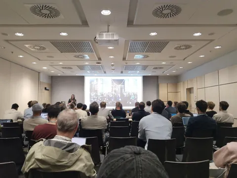
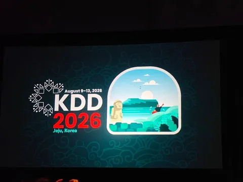
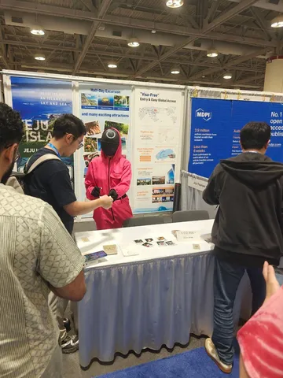
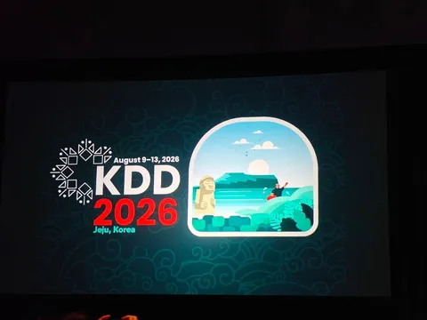
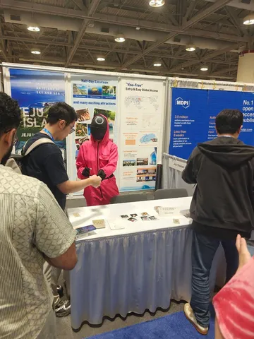
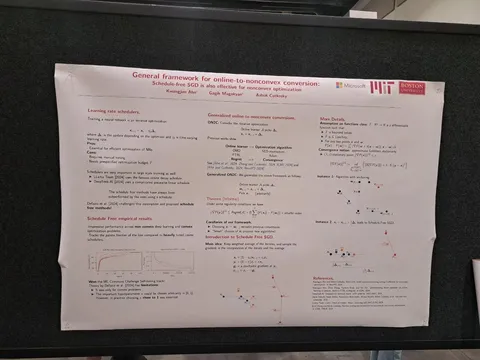
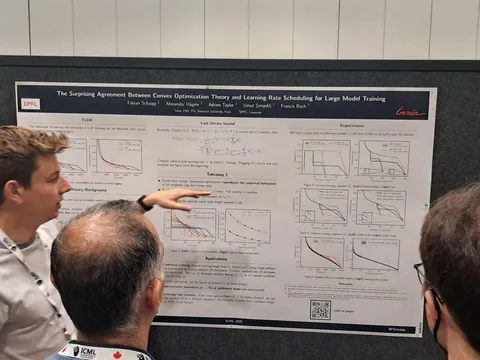
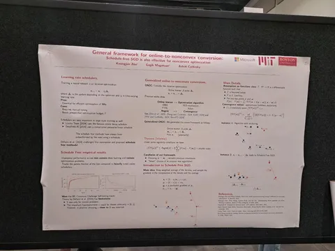
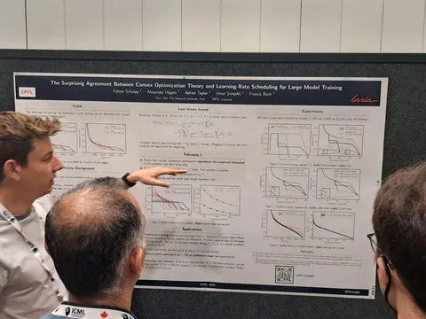

Впечатления от первого дня RecSys 2025
В Праге проходит конференция RecSys 2025 — и мы по традиции ведём репортаж с мероприятия. Первыми впечатлениями с нашим каналом поделился Иван Романов из Яндекс Путешествий. Слово Ивану:
ML Underhood
В Праге проходит конференция RecSys 2025 — и мы по традиции ведём репортаж с мероприятия. Первыми впечатлениями с нашим каналом поделился Иван Романов из Яндекс Путешествий. Слово Ивану:
Прошёл первый день RecSys, посвящённый в основном воркшопам. Первые доклады разочаровали: много воды в духе «за хорошие рекомендации против плохих». Хотел уйти, но попасть на CARS (Context-Aware RecSys) было сложно, поэтому остался на вторую часть — и не зря: стало интереснее.
Несмотря на, как мне кажется, индустриальное название самого воркшопа, большинство статей было академическими, и некоторые — сильно оторваны от реальности.
Одному человеку пришлось перейти от задачи с персонализацией — sasrec/argus-like арх-рой — к choice modeling, и он долгое время аудитории объяснял, зачем использовал что-то вроде feature tokenize transformer для своей задачи. И правда, зачем? Думаю, чтобы самому было интереснее — на графиках от скейла трансформера метрика не росла: layers=1, head=1, dim=16 давал по сути топовый результат.
Был обзор статьи KP4POI: файнтюнят LLM, промптируют посещённые места и после спецтокена ожидают новые POI (points of interest). Ничего особенного, просто отметить что LLM-based RecSys набирает обороты. В тайтле статьи есть «on Large-scale Datasets», но на одном из слайдов было что-то вроде про 5–10 тыс. пользователей.
Многие работают над своими агентами для построения маршрутов путешествий с персонализацией. Показали две демки, и ни в одной не было Чехии, что странно — можно же было всем посетителям конференции попиарить приложение. А другая демка (CityRiddler) была только по Вене, где до конференции я провёл чудесный день. Маршрут по городу и нескольким музеям мне составил ChatGPT, вот и у спикеров напросился вопрос: «А не работает ли уже это out of the box в ChatGPT и нужен ли продукт в целом, если это только промпт?»
Если не агентами богаты и LLM не тюним, то тогда RAG. Здесь, несмотря на скепсис, был очень классный слайд от одного из спикеров: «LLM as a judge» (можно оценивать не только релевантность ответа запросу, но и, например, вопросом «were retrieved chunks actually relevant» считать что-то вроде Precision). Не знаю, насколько рабочая конфигурация и не будет ли 100% корреляции скоров «судьи» под каждую из задач (recall, precision, faithfulness, answer relevancy).
А ещё среди докладов обнаружил вот такую интересную идею — взяли Mixup из image augmentation и применяют над пользовательскими векторами. Эффект есть, но метрики были странные.
ML Underhood

1 429 просмотров · 19 реакций
Открыть в Telegram · Открыть пост на сайте
 
 
